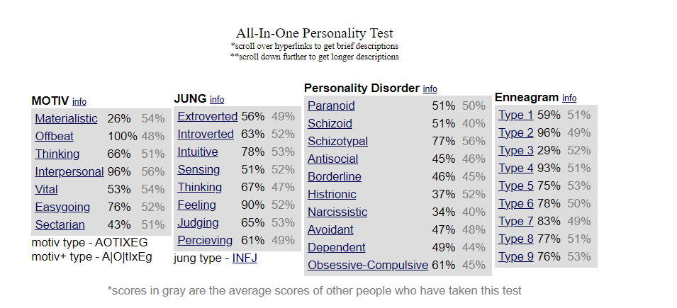

My Personality
My Strongest Trait and Emotion
In my journey as a dedicated computer science student, my strongest trait, which is empathy, and my dominant emotion, enthusiasm, have played a significant role in shaping my school and academic life. These qualities, alongside my hobbies and passions, have created a unique synergy that impacts not only my personal growth but also my interactions within the academic community.
In my journey as a dedicated computer science student, my strongest trait, which is empathy, and my dominant emotion, enthusiasm, have played a significant role in shaping my school and academic life. These qualities, alongside my hobbies and passions, have created a unique synergy that impacts not only my personal growth but also my interactions within the academic community.
My hobbies, such as reading, watching anime, drawing, playing games, hitting the gym, and exploring new things, provide a well-rounded foundation for personal growth and creativity. These activities offer me moments of relaxation and inspiration that I can bring into my academic pursuits. For instance, drawing and anime have cultivated my visual problem-solving skills, which can be valuable when working on user interface designs or graphics in computer science projects. My passion for games has honed my strategic thinking, which is applicable to algorithmic problem-solving in programming. Lastly, my emotional nature serves as a driving force for empathy and kindness. It compels me to seek out opportunities to contribute positively to my academic community and the wider world. Whether it's participating in volunteer work, offering support to classmates, or simply spreading positivity, I find fulfillment in making a difference, no matter how small.
My hobbies, such as reading, watching anime, drawing, playing games, hitting the gym, and exploring new things, provide a well-rounded foundation for personal growth and creativity. These activities offer me moments of relaxation and inspiration that I can bring into my academic pursuits. For instance, drawing and anime have cultivated my visual problem-solving skills, which can be valuable when working on user interface designs or graphics in computer science projects. My passion for games has honed my strategic thinking, which is applicable to algorithmic problem-solving in programming. Lastly, my emotional nature serves as a driving force for empathy and kindness. It compels me to seek out opportunities to contribute positively to my academic community and the wider world. Whether it's participating in volunteer work, offering support to classmates, or simply spreading positivity, I find fulfillment in making a difference, no matter how small.
Favorite Hero/Quote
My hero is Satoru Gojo. One of their quotes that deeply resonates with me is:
"I don't want to live in a world without you guys. When you do die, die with a smile."
My hero, Satoru Gojo from "Jujutsu Kaisen," embodies a powerful philosophy that resonates with me deeply. One of my favorite quotes from him is, "I don't want to live in a world without you guys. When you do die, die with a smile." This quote reflects his unwavering dedication to protecting and cherishing those he cares about, even in the face of danger. It serves as a constant reminder that our connections with others are what make life truly meaningful. My favorite scene featuring Gojo is when he unleashes his immense power in battle, displaying unparalleled confidence and resolve. His willingness to confront adversity head-on and his unshakeable belief in his abilities are qualities I greatly admire. Gojo's character inspires me to approach challenges in life with a fearless and determined spirit, always striving for excellence. His commitment to protecting the world from curses and his boundless optimism in the face of darkness make him a hero worth looking up to.
Personality Test
I don't believe in personality tests as a definitive measure of an individual's character or behavior. While they can provide some insight into general tendencies, they often oversimplify complex human personalities. The results can be influenced by various factors, including the individual's mood, context, and how they perceive themselves at the moment of taking the test. Additionally, personality is a multifaceted and dynamic aspect of human existence that cannot be reduced to a fixed set of traits or percentages.
Regarding the validity of these tests, they can have some value in generating self-awareness and promoting introspection. They may offer a starting point for individuals to reflect on their strengths and weaknesses. However, it's crucial to approach them with a critical mindset and not as an absolute verdict on one's personality. In my individual case, while these test results provide some insights, I believe that my personality is a sum of experiences, contexts, and personal growth that these tests cannot fully capture. They may offer a snapshot of certain traits, but they do not define who I am as a whole. I place more trust in self-reflection, personal experiences, and interactions with others as a means of understanding my own personality and its nuances.